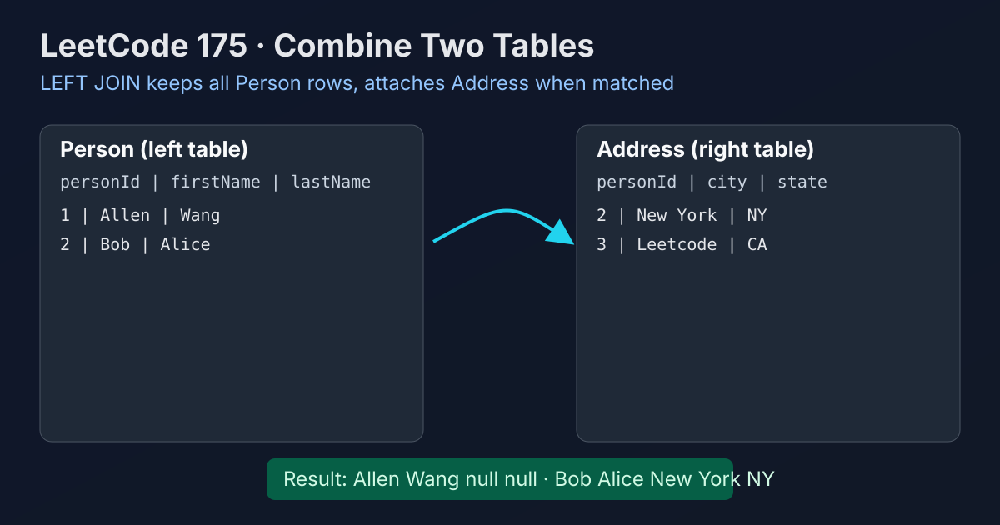

LeetCode 175: Combine Two Tables (LEFT JOIN by personId)
LeetCode 175SQLLEFT JOINToday we solve LeetCode 175 - Combine Two Tables.
Source: https://leetcode.com/problems/combine-two-tables/

English
Problem Summary
Given table Person(personId, lastName, firstName) and Address(addressId, personId, city, state), return each person's first name, last name, city, and state. If a person has no address, city and state should be null.
Key Insight
This is the textbook case for a LEFT JOIN: keep all rows from Person, and match Address by personId when possible.
SQL Strategy
- Start from Person as the left table.
- LEFT JOIN Address on Person.personId = Address.personId.
- Select exactly the four required columns: firstName, lastName, city, state.
Complexity Analysis
Conceptually, join time depends on execution plan and indexes. In interviews, the key is correctness of join type and join key, not low-level DB engine complexity.
Common Pitfalls
- Using INNER JOIN, which drops people without addresses.
- Joining on the wrong key (e.g. addressId).
- Selecting columns from only one table and missing required output fields.
Reference Implementations (Java / Go / C++ / Python / JavaScript)
SELECT p.firstName, p.lastName, a.city, a.state
FROM Person p
LEFT JOIN Address a
ON p.personId = a.personId;SELECT p.firstName, p.lastName, a.city, a.state
FROM Person AS p
LEFT JOIN Address AS a
ON p.personId = a.personId;SELECT p.firstName, p.lastName, a.city, a.state
FROM Person p
LEFT JOIN Address a
ON p.personId = a.personId;SELECT p.firstName, p.lastName, a.city, a.state
FROM Person p
LEFT JOIN Address a
ON p.personId = a.personIdSELECT p.firstName, p.lastName, a.city, a.state
FROM Person p
LEFT JOIN Address a
ON p.personId = a.personId;中文
题目概述
给定两张表：Person(personId, lastName, firstName) 与 Address(addressId, personId, city, state)。要求返回每个人的 firstName、lastName、city、state；若没有地址，则城市和州返回 null。
核心思路
这是 LEFT JOIN 的经典题：以 Person 为主表，确保所有人都保留，再按 personId 去匹配 Address。
SQL 解法
- 以 Person 作为左表。
- 使用 LEFT JOIN Address，连接条件是 Person.personId = Address.personId。
- 只选题目要求的四个字段：firstName、lastName、city、state。
复杂度说明
数据库实际复杂度取决于执行计划和索引。面试场景中重点是连接类型选对、连接键写对、结果字段齐全。
常见陷阱
- 误用 INNER JOIN，会丢掉没有地址的人。
- 连接键写错（比如写成 addressId）。
- 没有返回完整字段，导致输出不符合题意。
多语言参考实现（Java / Go / C++ / Python / JavaScript）
SELECT p.firstName, p.lastName, a.city, a.state
FROM Person p
LEFT JOIN Address a
ON p.personId = a.personId;SELECT p.firstName, p.lastName, a.city, a.state
FROM Person AS p
LEFT JOIN Address AS a
ON p.personId = a.personId;SELECT p.firstName, p.lastName, a.city, a.state
FROM Person p
LEFT JOIN Address a
ON p.personId = a.personId;SELECT p.firstName, p.lastName, a.city, a.state
FROM Person p
LEFT JOIN Address a
ON p.personId = a.personIdSELECT p.firstName, p.lastName, a.city, a.state
FROM Person p
LEFT JOIN Address a
ON p.personId = a.personId;
Comments